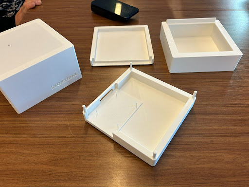
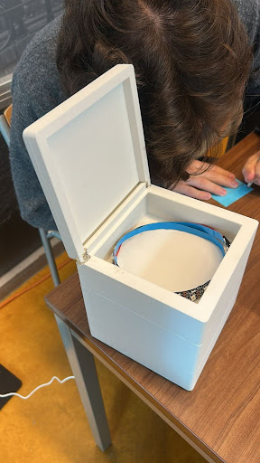
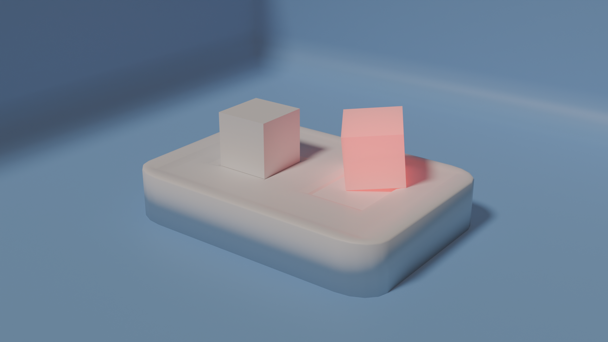
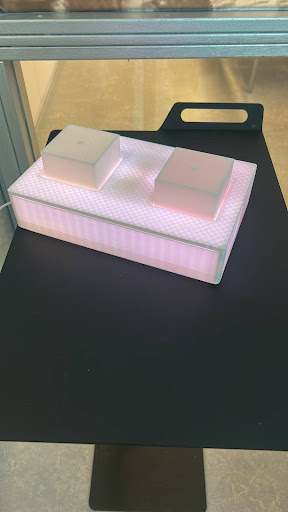

Playful Intelligence
Date
2-month university project
Project Type
Academic, Speculative Design
Roles
Interaction Designer, Hardware Engineer
Skills
Participatory Design, Prototyping, Electronics, AI Interfaces
Playful Intelligence was a speculative design project focused on building a voice agent for children. The goal was to extract current trends, extend them into the near future, and create an interface for a product that could exist in that prospective world.
I worked as an interaction designer and hardware engineer. I was responsible for conceptualizing the interaction model and user experience, while also building the physical prototype, electronics integration, and LED feedback system.


We began by considering a negative behavior the team saw in children and converting it into something positive. The challenge centered on overconsumption, over-dependence, and the way technology learns to target children.
Our ideation led us to artificial intelligence as a servant of imagination: something that creates with a person rather than for a person.
To validate the brief, I facilitated a co-creation workshop with 4 stakeholders. We used storyboards, role-play, and structured reflection to understand how children currently interact with AI, and why that interaction might need to change.
The first iteration was a box that would sit on a table and narrate stories when opened. As an interaction designer, I focused on how the child should interpret the system and how the product could protect their autonomy.
We used LEDs inside the box to communicate system status. When it was listening, the box pulsed gently. When it was narrating a story, it became a solid color. A top cover made the object wake when opened and sleep when closed.
Feedback revealed that a similar product already existed and that people wanted a more material way of interacting with the project, so we shifted toward a more physical concept.


We redesigned the concept around characters instead of a central narrator. Inspired by figurines and dolls, we kept the boxy form factor because it made it easy to project characters onto simple objects.
The boxes could be picked up and played with physically. We also kept LEDs as the primary indicator, but now each character could light up independently, making the interaction between characters richer.
The final prototype featured two 3D printed boxes, unofficially called Salt and Pepper, and a base that worked like a night light. The user spoke through bluetooth headphones to a machine running a small AI model tuned to make stories with two characters and user input.
This project taught me valuable lessons in speculative and participatory design, especially in facilitating co-creation workshops and translating stakeholder insights into design requirements.
On the technical side, I gained hands-on experience with hardware prototyping, battery chemistry, wireless communication protocols, and integrating AI models with physical interfaces.
Looking back, I would focus more on creating a realistic, implementable product. I felt connected to this project, and would love to continue its development.
